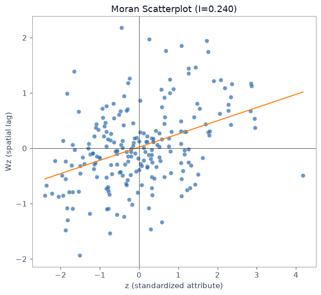

Choropleth classification, the Moran scatterplot, and reading spatial patterns before testing them. This notebook is Part 2. Spatial Autocorrelation (Chapter 2.3 of 6). The worked example uses diabetes_northeast.shp (217 counties). The methods come from geolattice.spatial_statistics.viz, geolattice.spatial_statistics.esda.
Overview
Chapter 2.1 looked at a raw choropleth and judged “yes, this looks clustered” by eye. This chapter makes that judgement more systematic, in two steps, before Chapter 2.4 turns it into a formal test:
Step
What we do
Classification
Compare three ways of binning a continuous variable into a choropleth’s colour classes, and how the choice changes the map’s visual message
Moran scatterplot
Plot each county’s (centred) value against its spatial lag: the geometric object that Moran’s I actually summarises as a single slope
Quadrants
Read HH / LL / HL / LH in terms of the health outcome, and what each quadrant suggests for intervention
Caveats
Two real quirks of this library’s implementation: a mislabelled axis, and where the one island in the data lands
By the end, the Moran scatterplot built here is the same object Chapter 2.5 revisits pointwise, county by county, as the Local Moran’s I (LISA) statistic.
API overview
- Queen
- Moran
- choropleth, moran_scatter
Setup
Locate the repository root, import the spatial-statistics helpers, and point DATA at the example files.
Installation. This notebook needs installation option 3 (core, spatial analysis and spatial statistics): pip install "geolattice[statistics]". See “Installation options” in the GeoLattice README.
Code
import sysfrom pathlib import Pathimport numpy as npimport pandas as pdimport geopandas as gpdimport matplotlib.pyplot as pltROOT = Path.cwd().resolve()for candidate in [ROOT, *ROOT.parents]:if (candidate /"pyproject.toml").is_file() and (candidate /"Data").is_dir(): ROOT = candidatebreakelse:raiseFileNotFoundError("Could not find the GeoLattice repository root.")sys.path.insert(0, str(ROOT))DATA = ROOT /"Data"/"00_shared"/"data_spatial_stat"import geolattice.spatial_statisticsfrom geolattice.viz import apply_map_stylefrom geolattice.spatial_statistics.weights import Queenfrom geolattice.spatial_statistics.esda import Moranfrom geolattice.spatial_statistics.viz import choropleth, moran_scatterapply_map_style()C = {"blue": "#2b6cb0", "red": "#c0392b", "green": "#2f855a", "orange": "#dd6b20","grey": "#718096", "purple": "#6b46c1", "teal": "#2c7a7b"}counties = gpd.read_file(DATA /"diabetes_northeast.shp")w = Queen(counties)print(f"geolattice.spatial_statistics : version {geolattice.spatial_statistics.__version__}")print(f"counties : {counties.shape[0]}, W islands: {len(w.islands())}")
geolattice.spatial_statistics : version 0.3.49
counties : 217, W islands: 1
Choropleth Classification Schemes
A choropleth needs to bin a continuous variable into a small number of colour classes. geolattice.spatial_statistics.viz.choropleth offers three schemes (delegating to mapclassify when installed): quantiles (equal count per class), equal interval (equal value width per class), and natural breaks / Fisher-Jenks (classes chosen to minimise within-class variance).
import mapclassifyfor scheme, cls in [("Quantiles", mapclassify.Quantiles(counties["Dia_pct"], k=5)), ("Equal interval", mapclassify.EqualInterval(counties["Dia_pct"], k=5)), ("Natural breaks", mapclassify.FisherJenks(counties["Dia_pct"], k=5))]: counts = pd.Series(cls.yb).value_counts().sort_index()print(f"{scheme:16s} bin edges: {np.round(cls.bins, 2)} | counties per class: {counts.tolist()}")
Quantiles bin edges: [ 7.24 7.87 8.48 9.32 12.44] | counties per class: [44, 43, 43, 44, 43]
Equal interval bin edges: [ 7.18 8.49 9.81 11.12 12.44] | counties per class: [40, 90, 65, 19, 3]
Natural breaks bin edges: [ 7.14 8.14 9.08 10.16 12.44] | counties per class: [38, 71, 60, 34, 14]
Quantiles always give five visually similar-sized colour patches (43-44 counties each) regardless of how the underlying values are distributed: good for showing rank, poor for showing magnitude gaps. Equal-interval classes are easy to interpret (“each class spans about 1.3 percentage points”) but can leave some classes nearly empty if the data are skewed. Natural breaks looks for real gaps in the data and tends to isolate genuine outliers into their own class. None of the three is “correct”: they answer different questions, and switching schemes is often enough to change which counties look like the extreme ones on the map.
The Moran Scatterplot
Moran’s I (formally defined in Chapter 2.4) has a geometric interpretation: it is the slope of the best-fit line through a scatterplot of each region’s value against the (row-standardised) average of its neighbours, the spatial lag. moran_scatter builds this plot directly from a MoranResult (or from raw y, w).
Code
res = Moran(counties["Dia_pct"], w, permutations=999, seed=1)fig, ax = plt.subplots(figsize=(6.5, 6))moran_scatter(res, ax=ax, color=C["blue"], alpha=0.7, edgecolor="white", linewidth=0.3)plt.tight_layout()plt.show()print(f"Moran's I (the fitted slope) = {res.I:.4f}")

Moran's I (the fitted slope) = 0.2398
A labelling caveat: centred, not standardised
The scatterplot’s axis labels (“z (standardized attribute)”) describe the x-axis as standardised, but the implementation only centres the variable (subtracts the mean): it does not divide by the standard deviation. This is a real, checkable discrepancy between the label and the code:
Code
import inspectfrom geolattice.spatial_statistics.viz.moran import moran_scatter as _mssrc_line = [l for l in inspect.getsource(_ms).splitlines() if"z = y - y.mean()"in l][0]print("moran_scatter source line:", src_line.strip())print(f"std(z) as actually plotted: {(counties['Dia_pct'] - counties['Dia_pct'].mean()).std():.4f} (not 1.0)")
moran_scatter source line: z = y - y.mean()
std(z) as actually plotted: 1.2018 (not 1.0)
The consequence is cosmetic, not statistical: Moran’s I itself (the slope) is invariant to this scaling choice, so the number reported is unaffected. What changes is the axis units: the horizontal spread in the figure above is in percentage points of diabetes prevalence, not in standard-deviation units as the label implies. When reporting this plot, relabel the axis as “centred attribute” or divide by z.std() before plotting if a true z-score axis is wanted.
The island on the axis
Nantucket County (Chapter 2.2, Section 9) has zero Queen neighbours, so its row-standardised spatial lag is exactly \(0\) by construction: every island sits exactly on the horizontal axis of this plot, regardless of its own value.
Code
z_all = counties["Dia_pct"].to_numpy() - counties["Dia_pct"].mean()lag_all = w.lag(z_all)island_idx = w.islands()[0]print(f"Nantucket: z = {z_all[island_idx]:.3f}, lag = {lag_all[island_idx]:.6f}")on_axis = np.isclose(lag_all, 0.0)print(f"counties with lag exactly 0 (islands only): {on_axis.sum()} -> {counties.loc[on_axis, 'COUNTY'].tolist()}")
Nantucket: z = -1.299, lag = 0.000000
counties with lag exactly 0 (islands only): 1 -> ['Nantucket County']
A county with lag exactly \(0\) contributes nothing to the slope in either the “high” or “low” neighbourhood direction: it is neither confirmed nor contradicted by its (non-existent) neighbours. Section 5’s quadrant count below correctly excludes it from all four quadrants rather than assigning it arbitrarily.
Reading the Quadrants for a Health Outcome
The Moran scatterplot splits into four quadrants around the origin, and for a health-outcome variable like Dia_pct each has a distinct, actionable reading:
Quadrant
Condition
Reading for Dia_pct
HH (high-high)
above-average county, above-average neighbours
A high-prevalence region: supports a regional public-health intervention, not a single-county one
LL (low-low)
below-average county, below-average neighbours
A low-prevalence region: a candidate for understanding protective regional factors
HL (high-low)
above-average county surrounded by below-average neighbours
A local outlier: investigate a county-specific cause (access to care, local demographics) or a data-quality issue
LH (low-high)
below-average county surrounded by above-average neighbours
A possibly protective pocket within a high-prevalence region: worth understanding what is different locally
The clear majority of counties fall in the self-reinforcing HH/LL quadrants (62 + 72 = 134 of 217, 62%), which is exactly what a positive, significant Moran’s I predicts: but the plot also flags 41 HL and 41 LH counties whose local story runs against their region. Chapter 2.5 gives each of those counties a formal significance test (most will turn out to be indistinguishable from noise); for now, the scatterplot is a map of candidates for closer inspection, not a list of confirmed local outliers.
High-leverage Points
Like any regression slope, Moran’s I can be pulled by a small number of extreme observations. A quick check: which counties have the largest |z| (most extreme prevalence), and do they sit consistently with the overall positive slope or against it?
Most of the largest-|z| counties are in HH or LL: extreme and embedded in a like-valued neighbourhood, which is what gives Moran’s I its positive value. But the single most extreme county, Bronx County, NY (\(Dia\_pct = 12.44\), the highest in the dataset), is actually an HL outlier: its own value is far above average, yet its Queen neighbours average below the region mean. A dense urban borough surrounded by lower-prevalence suburban counties is exactly the kind of local contrast a global statistic cannot see, Moran’s I is still positive and significant overall, but its single largest-magnitude data point is pulling against the slope, not with it. This is precisely why Chapter 2.5 tests every county individually rather than trusting the scatterplot’s overall shape: a large |z| says a county is unusual, not which quadrant it belongs to.
Summary and Conclusions
This chapter turned Chapter 2.1’s raw map into two structured exploratory tools.
What we did
Compared quantile, equal-interval, and natural-breaks choropleth classification, and confirmed they can tell visually different stories from the same data.
Built the Moran scatterplot and confirmed its slope equals the Moran’s I computed formally in Chapter 2.4 (0.240).
Found and documented a real labelling discrepancy: the plot’s x-axis says “standardized” but the implementation only centres the data: the slope (and hence Moran’s I) is unaffected, but the axis units are not what the label claims.
Showed that the one island in the data (Nantucket) sits exactly on the horizontal axis by construction, and should be excluded from quadrant counts rather than assigned one.
Read the four quadrants (HH/LL/HL/LH) as actionable categories for a health outcome, and counted 62 HH, 72 LL, 41 HL, 41 LH counties.
Checked that the most extreme-valued counties are also the ones driving the positive slope (all in HH/LL), rather than being isolated high-leverage outliers.
Practical takeaways
Choropleth classification is not neutral: pick (and report) the scheme deliberately, and consider showing more than one when values are skewed.
The Moran scatterplot’s slope is Moran’s I; treat the two as the same fact in two different forms, not as independent evidence.
Always check a plotting function’s axis labels against its actual computation before reporting a figure, this library’s own moran_scatter is a concrete example of where the two can silently diverge.
Next steps
Chapter 2.4 (Measuring Global Spatial Autocorrelation) gives the slope seen here a formal null distribution, a z-score, and a permutation p-value: and introduces Geary’s C, General G, join counts, and bivariate Moran’s I as complementary global measures.
Further reading
Textbooks
Reference
Notes
Anselin, L. (1996). The Moran scatterplot as an ESDA tool to assess local instability in spatial association. In Spatial Analytical Perspectives on GIS.
Origin of the Moran scatterplot as an exploratory device
Bailey, T. C. & Gatrell, A. C. (1995). Interactive Spatial Data Analysis. Longman.
Broader treatment of exploratory spatial data analysis, including classification choices
Slocum, T. A. et al. (2022). Thematic Cartography and Geovisualization (4th ed.). CRC Press.
Standard reference on choropleth classification schemes
Key papers
Paper
Contribution
Anselin, L. (1995). Local indicators of spatial association: LISA. Geographical Analysis, 27, 93-115.
Connects the scatterplot’s quadrants to the local statistics of Chapter 2.5
Jenks, G. F. (1967). The data model concept in statistical mapping. International Yearbook of Cartography, 7, 186-190.
Origin of the natural-breaks (Fisher-Jenks) classification